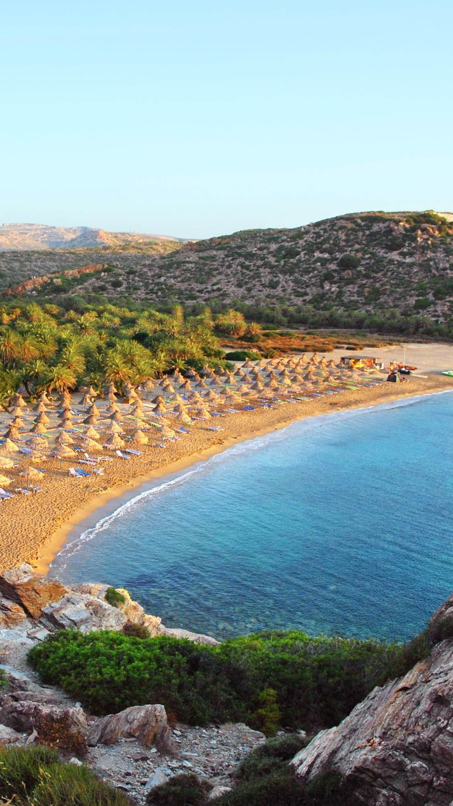

Η Κρήτη με μια ματιά
Οι 4 Νομοί της Κρήτης
ΧΑΝΙΑ
Ένα χαρμάνι πολιτισμών και φυσικών τοπίων. Από την παλιά πόλη στον εξωτικό Μπάλο και στο διάσημο φαράγγι, τα Χανιά κερνούν ρακή και αξέχαστες εμπειρίες.
ΡΕΘΥΜΝΟ
Το ενετικό λιμάνι, η Φορτέτσα, η παλιά πόλη. Στο Ρέθυμνο τα πάντα ξεχειλίζουν ιστορία, ομορφιά και παράδοση.

ΗΡΑΚΛΕΙΟ
Σφύζει από ζωή, χαρίζοντάς σας πληθώρα απολαύσεων. Μια πόλη γενναιόδωρη και αυθεντική. Το χτες και το σήμερα σε μια αρμονική συνύπαρξη.

ΛΑΣΙΘΙ
Ένας τόπος γεμάτος ιστορία, απίστευτο φυσικό πλούτο και λιγότερο γνωστούς αλλά ιδιαίτερα ενδιαφέροντες και ξεχωριστούς προορισμούς.